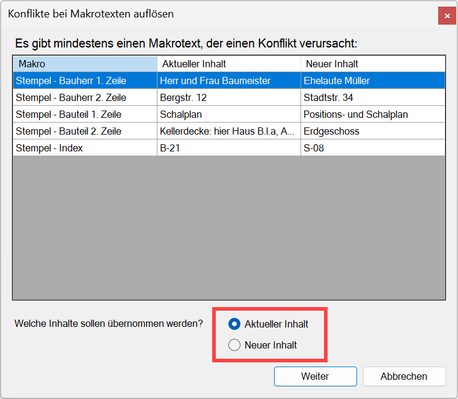

Zeichnungsteil aus der ISBCAD Zwischenablage in eine geöffnete ISBCAD Zeichnung einfügen.
·Die in der Zwischenablage enthaltenen Zeichnungsteile werden im Funktionsbereich angezeigt und stehen in allen zur gleichen Zeit geöffneten ISBCAD Instanzen zur Verfügung.
·Um eine eingefügte Teilzeichnung nachträglich genau zu platzieren, können Sie die Funktion [Konst 1 | Versch | Setzen] verwenden. Alternativ können Sie eine Teilzeichnung mit [Datei | Auslag] auslagern und anschließend mit [Datei | Einfüg] exakt platzieren.
So wird's gemacht:
§Wechseln Sie in die ISBCAD Instanz, in die der zwischengespeicherte Zeichnungsteil eingefügt werden soll.
Sie können den Zeichnungsteil auch in die aktuell geöffnete Zeichnung einfügen.
§Wählen Sie im Funktionsbereich die Art der Folienverwendung. Die Methodik ist unter [Datei | Einfüg] beschrieben.
|
Vorhandene Folien bleiben erhalten. |
|
Inhalt der Zwischenablage in eine bestimmte Folie transformieren. Öffnet den Dialog Neue Folie. |
|
Doppelt vorkommende Folien werden getrennt. Siehe: Folienbelegung wählen |


§Wählen Sie mit den Nummern-Schaltflächen unter der Vorschau der ISBCAD Zwischenablage (im Funktionsbereich) den einzufügenden Zeichnungsteil.
Wenn Sie die ISBCAD Instanz gewechselt haben und der einzufügende Zeichnungsteil nicht angezeigt wird, aktualisieren Sie die Vorschau. Klicken Sie hierzu im Funktionsbereich über dem Vorschaufenster auf [Akt] (aktualisieren).
|


Die enthaltenen Elemente werden im Vorschaufenster angezeigt und an den Cursor gehängt.
§Platzieren Sie die Zeichnungsteile per Mausklick in der aktuellen Zeichnung. [Lage der Zeichnung].
Sie können den gewählten Zeichnungsteil per Mausklick sofort ein weiteres Mal einfügen, einen anderen Zeichnungsteil wählen und einfügen (Auswahl im Funktionsbereich) oder eine andere Funktion wählen.
Konflikte bei Makrotexten auflösen
Wenn in der eingefügten Zeichnung bereits Makrotexte mit derselben Bezeichnung definiert sind, können Sie die kollidierenden Makros anpassen. In der Spalte Aktueller Inhalt werden Ihnen die Textinhalte der Zeichnung angezeigt, in die Sie Makrotexte einfügen möchten. Unter Neuer Inhalt werden Ihnen die Textinhalte der einzufügenden Makrotexte angezeigt.
§Wählen Sie, ob die aktuellen Inhalte beibehalten werden sollen, oder ob sie durch die neuen Inhalte ersetzt werden sollen. Aktivieren Sie dazu im unteren Dialogbereich die entsprechende Option.

§Klicken Sie auf Weiter, um den Import fortzusetzen, oder klicken Sie auf Abbrechen, um ihn abzubrechen.
Die Textinhalte werden übernommen und in der Zeichnung aktualisiert, falls die neuen Inhalte übernommen wurden.
Zugehörige Referenzen:
·Zwischenablage von Zeichnungen
Siehe auch: